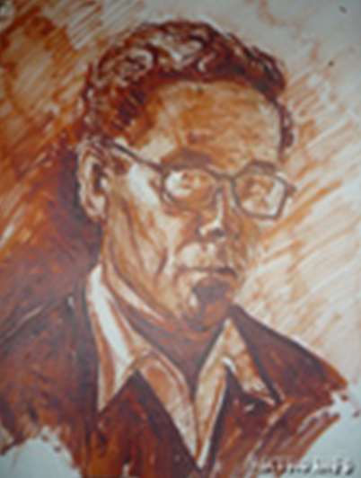
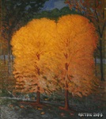
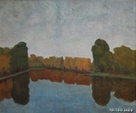
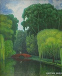
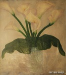

Кесова гора
Родился 25 марта 1904 года в селе Суходол Тверской губернии. Пётр был младшим сыном в семье. Окончил школу в городе Кашине Тверской губернии. Поступил на факультет живописи в ЛИЖСА – Ленинградский институт живописи, скульптуры и архитектуры. Был призван из института в армию.

В годы Великой Отечественной войны воевал на Ленинградском, Волховском, 3-м Белорусском фронтах, был начальником инженерной службы. Участвовал в войне с Японией. Старший техник-лейтенант. Пётр Павлович был награждён орденом Отечественной войны II степени, медалями «За оборону Ленинграда», «За взятие Кенигсберга», «За победу над Германией в Великой Отечественной войне 1941-1945 г.г.», «За победу над Японией» и другими.
После демобилизации вернулся в институт, но преподаватели не посоветовали восстанавливаться на факультет живописи, так как трудно было опять «ставить руку», отвыкшую за годы войны от кисти. Поэтому он окончил 1949 году факультет архитектуры ЛИЖСА им. И.Е.Репина. Учился у В.Руднева, И.Фомина, Н.Тырсы, В.Орешникова.
Работал архитектором в Ленинградском филиале Государственного проектного института кинематографии (Гипрокино). Был автором проекта Дома радио в Минске. В 1962 году принят в члены Союза архитекторов СССР.
Но всё своё свободное время он отдавал любимой живописи (холст, масло). Уже с 1974 года он участвует в выставках, в 1975 году принят в Союз художников СССР. Своё творчество художник посвятил образам современников. Кроме того, им было написано множество пейзажей и натюрмортов. Список основных произведений можно дополнить следующими картинами: «Поляна в парке»(1976 г.), «Мой старый друг»(1980 г.), «Туман над озером», «Расул Гамзатов», «Каллы» (1978 г.). П.П.Носов организовал кружок художников в Центральном доме Союза архитекторов СССР.
Буклет о Петре Павловиче Носове с чёрно-белыми репродукциями некоторых его работ вышел в серии «Московские художники» МОСХ РСФСР в 1989 году в издательстве «Советский художник». Умер Пётр Павлович в 1989 году, похоронен на Хованском кладбище в Москве. Работы находятся в частном собрании в Твери (Россия).




